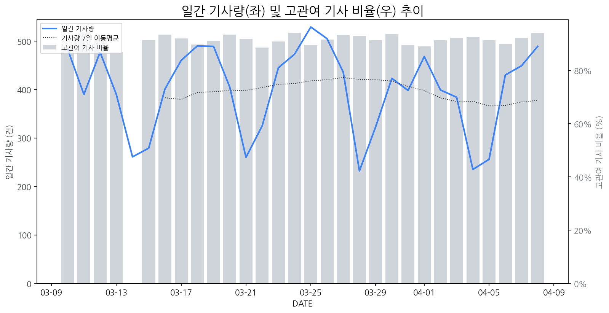

1
시장 활동 지표
기사량 추세 & 이상 징후 탐지
시장의 '전체 기사량'이 평소보다 비정상적으로 급증했는지(Spike)를 차트로 확인하고, LLM이 분석한 급등의 핵심 원인을 파악할 수 있음

고관여 기사란? 산업 연관 키워드로 수집된 기사들 중 디스플레이 키워드에 가중치를 반영하여 도출된 관련성 높은 기사
수집된 기사 수 (2026-04-08)
489
+4% WoW
기사량 변동 수준 (7일 이동평균 대비)
±6.7% 이하
2
오늘의 키워드
급격한 관심 ↑, 주목해야 할 키워드
1
sk하이닉스
+5.9σ
SK하이닉스, 321단 QLC 낸드 기반 고성능 SSD 출시로 AI PC 시장 공략 강화.
Related Metrics
금일 언급량: 24, 전일 대비: +21
Interpretation
AI PC 시장 확대 기대.
Next Step
'sk하이닉스' 관련 상세 기사 및 경쟁사 반응 모니터링
2
tv
+5.3σ
삼성·LG의 1분기 TV 사업 흑자 전환 및 친환경 인증 획득 소식이 호재로 작용했습니다.
Related Metrics
금일 언급량: 32, 전일 대비: +25
Interpretation
수익성 개선 기대감 증대
Next Step
'tv' 관련 상세 기사 및 경쟁사 반응 모니터링
3
lg디스플레이
+4.4σ
LG디스플레이, OLED 중심 사업 재편을 위한 역대 최대 규모 희망퇴직 실시
Related Metrics
금일 언급량: 19, 전일 대비: +16
Interpretation
구조조정 가속화
Next Step
'lg디스플레이' 관련 상세 기사 및 경쟁사 반응 모니터링
4
xr
+3.9σ
삼성전자 갤럭시 XR 관련 OS 업데이트 및 B2B 솔루션 확대 소식이 XR 시장 기대감을 높였습니다.
Related Metrics
금일 언급량: 18, 전일 대비: +15
Interpretation
XR 시장 성장 촉진, 디스플레이 수요 증가
Next Step
'xr' 관련 상세 기사 및 경쟁사 반응 모니터링
3
실시간 Risk 키워드
경계해야 할 시그널 탐지
특정 토픽의 부정 감성 점수가 급등할 때 이를 즉시 탐지하고, "근거 기사" 링크를 통해 리스크의 실체를 빠르게 파악할 수 있음
키워드 분석 결과, 오늘은 걱정할 만한 하락 신호가 없습니다. (부정 언급량 변화: +1.5σ 이내)
4
주요 이벤트 모니터링
실시간 산업 동향 파악을 위한 주요 활동
최근 발생한 주요 기업들의 신제품 출시, 투자 등 주요 이벤트를 제공하여 매일 경쟁사 동향을 확인할 수 있음
반도체 장비 관련주로 분류되는 에이치엠넥스, 주성엔지니어링, HPSP, 고영 등의 주가가 상승하며 시장에서 긍정적인 반응을 보이고 있다. 이는 해당 기업들이 디스플레이 장비 시장에서도 중요한 역할을 하고 있음을 시사한다.
Impact
이번 반도체 장비주들의 주가 상승은 디스플레이 장비 공급망 전반의 투자 심리 개선 및 기술 개발 가속화에 긍정적인 영향을 미칠 수 있다.
Next Step
디스플레이 제조 기업은 이번 반도체 장비주들의 강세를 모니터링하며, 협력 가능성이 있는 장비 기업과의 파트너십을 강화하거나 신규 기술 도입을 검토해야 한다.
한국디스플레이산업협회(KDIA)가 대만 디스플레이 산업계와 교류 협력단을 구성하여 마이크로LED 기술 주도권 확보를 위한 협력을 강화했다. 이번 협력은 양국 간 기술 교류 및 공동 연구 개발을 통해 차세대 디스플레이 시장에서의 경쟁력을 높이는 데 초점을 맞추고 있다.
Impact
이번 협력은 마이크로LED 기술 개발 경쟁을 심화시키고, 관련 부품 및 소재 산업 생태계의 성장을 촉진할 것으로 예상된다.
Next Step
마이크로LED 기술 로드맵을 재점검하고, 협력단 참여 기업들과의 기술 교류 및 공동 연구 기회를 모색해야 한다.
ASUS 젠북 A16이 독특한 촉감과 사용자 경험을 제공하는 노트북으로 출시되어 시장의 관심을 받고 있습니다. 이 제품은 혁신적인 디자인과 기능으로 기존 노트북 시장과는 차별화된 가치를 제시합니다.
Impact
이러한 혁신적인 노트북의 등장은 디스플레이 패널 제조사들에게도 독특한 질감이나 특수 코팅 등 차별화된 디스플레이 기술 개발에 대한 새로운 요구와 기회를 제공할 수 있습니다.
Next Step
디스플레이 제조 기업은 ASUS 젠북 A16과 같은 혁신적인 제품 트렌드에 맞춰, 촉각적 경험을 향상시킬 수 있는 특수 표면 처리나 질감 구현 기술 개발을 고려해야 합니다.
SK하이닉스가 차세대 SSD 'PQC21'을 출시했으며, 삼성전자는 2026년형 TV 및 사운드바에 친환경 요소를 강화한 신제품을 선보였습니다.
Impact
SSD 성능 향상 및 친환경 가전 트렌드는 디스플레이 구동 및 소비 전력, 사용자 경험 측면에서 관련 시장의 기술 개발 및 제품 전략에 영향을 줄 수 있습니다.
Next Step
디스플레이 제조 기업은 고성능 SSD와 연계된 디스플레이 성능 최적화 및 친환경 소재/기술 적용을 통한 제품 경쟁력 강화 방안을 모색해야 합니다.
반도체 가격 상승(칩플레이션)으로 인해 휴대폰 및 태블릿의 가격이 인상될 것으로 예상됩니다. 이는 소비자들의 구매 심리에 영향을 미칠 수 있습니다.
Impact
디스플레이 패널 제조사들은 부품 가격 상승 압박을 완화하기 위해 패널 가격 인상을 검토하거나, 원가 절감을 위한 기술 개발에 집중해야 할 필요성이 커질 것입니다.
Next Step
디스플레이 제조 기업은 칩플레이션의 영향을 면밀히 분석하여 패널 가격 전략을 재검토하고, 장기적인 원가 경쟁력 확보를 위한 기술 혁신 및 공급망 관리에 집중해야 합니다.